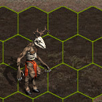
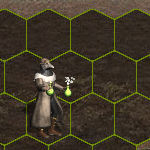

The Other Kingdom
The compilation with each mod progress info. By Fiorin.
Downloads
-
Ruins
-
TOK Expansion
link to the topic on HCommunity
download Soon first version
The compilation with each mod progress info. By Fiorin.
link to the topic on HCommunity
download Soon first version
| Name | Preview | Status | Project |
|---|---|---|---|
| Halfling Visit Hota's site to read more about the factory launch |
 |
working |
HOTA Factory |
| Halfling Up Visit Hota's site to read more about the factory launch |
working |
HOTA Factory | |
| Wendigo |  |
Current animation |
VCMI Neutral |
| Firbolg |  |
Soon animation |
VCMI Neutral |
| Firbolg Up |
Soon animation |
VCMI Neutral | |
| Peryton |  |
Soon define stats |
VCMI Neutral |
| Grand Peryton |  |
Soon define stats |
VCMI Neutral |
| Gnome |  |
Soon animation |
VCMI Neutral |
| Bear |  |
Soon animation |
VCMI Neutral |
| Bear Up |
Soon animation |
VCMI Neutral | |
| Forest Witch |  |
Soon define stats |
VCMI Neutral |
| Nature Priestess |
Soon define stats |
VCMI Neutral | |
| Spriggan |  |
Soon modeling |
VCMI Neutral |
| Plague Doctor |  |
Soon modeling |
VCMI Neutral |
| Executioner |
Soon modeling |
VCMI Neutral |
| Name | Portrait | Mini | Especiality | Secondary | Status | Project |
|---|